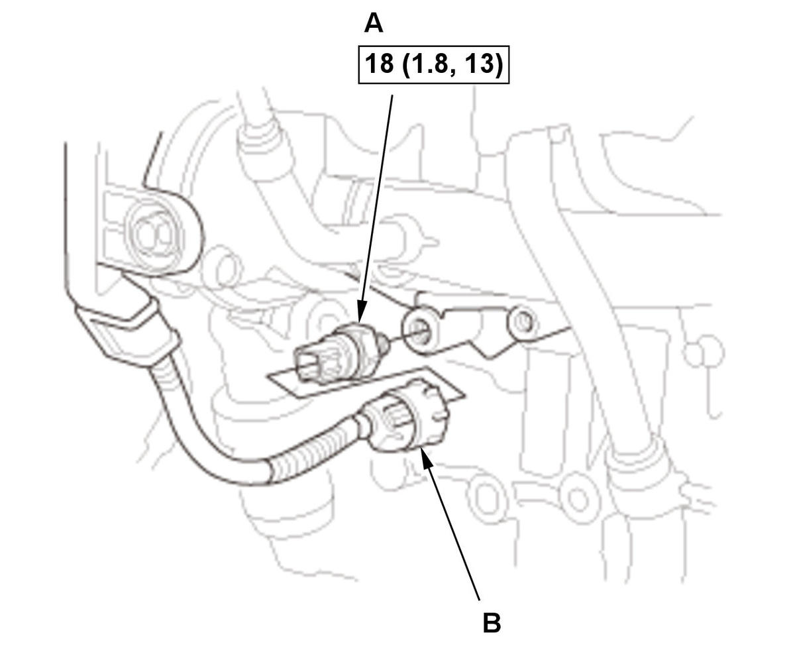

Engine Oil Pressure Switch Removal and Installation (1.5L Engine): Installation
NOTE: How to read the torque specifications.
- Oil Pressure Switch - Install

Courtesy of HONDA, U.S.A., INC.1. Apply liquid gasket (P/N 08718-0003, 08718-0004, or 08718-0009) to the oil pressure switch threads. Install the component within 5 minutes of applying the liquid gasket.
NOTE:- Using too much liquid gasket may cause liquid gasket to enter the oil passage or the end of the oil pressure switch.
- If too much time has passed after applying the liquid gasket, remove the old liquid gasket and residue, then reapply new liquid gasket.
2. Install the oil pressure switch (A).
3. Connect the connector (B).
- A/C Compressor - Install
- Drive Belt - Install
- Engine Undercover - Install
- Engine Undercover Lid - Install (With Engine Undercover Lid)
- Right Front Wheel - Install